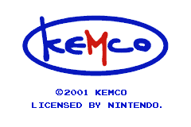

Zen-Nihon GT Senshuken (Japan)
Flash 512K Save Format Spec gbakit Built-In 💾 MultiBoot 🎮 4P Link 🔌 Mobile Adapter GB (CGB-005)
Cartridge Identity
- Game Code
AGTJ(FamilyAGT)- Header Title
GT-CHAMP- Maker / Revision
28/ rev0- ROM Size
- 4.0 MiB (4,194,304 B)
- Save Media
Flash 512K- SHA-256
d9c8819be3b4ef9a1aa095cc3ac58395273913a394c74b6f7b01c6e3e45d788f- Engine / SDK Group
comm-009(51 families)
Screenshots


Niche & Rare Accessories
Detected niche/rare GBA accessory support: 🔌 Mobile Adapter GB (CGB-005).
Full 343-ROM corpus breakdown in the Cartridge Hardware & Niche Accessories Reference · auto-detected from ROM bytes via
gbakit inspect.
- Mobile Adapter GB (CGB-005)
- Mobile System GB HTTP/1.0 + SMTP/POP3 stack
Link Cable & Multiplayer Communications
This title contains detected communication capabilities: 💾 MultiBoot 🎮 4P Link.
Detailed protocol specifications, SIO registers, Joybus commands, and MultiBoot sequences are documented in the Link & Multiplayer Reference.
- Multi-Player SIO (4P)
- 16-bit ring network · SIOCNT (
0x04000128) literals:0x04d068,0x04d1f8,0x04d388· SIODATA32/SIOMULTI0 (0x04000120) literals:0x04fa30,0x0518c8 - Single-Cart MultiBoot
- Single-Cartridge MultiBoot (Download Play) client/server handler · Thumb SWI 0x25 (
0xDF25):0x0a8010,0x0afdb0,0x0dd978,0x140452
Battery Save Format Specification
Open Full Save Format SpecDownload save-format.json
- Specification Coverage
- 4 mapped fields · 0 verified checksum(s) · Confidence: HIGH
- gbakit Built-In Support
- Built-in (AGTJ)
gbakit save verify AGTJ save.sav
gbakit save decode AGTJ save.sav
gbakit save fix AGTJ damaged.sav -o repaired.savObserved Battery Save Layout
- Fill Byte & Active Size
0x00fill · 25,424–25,424 / 65,536 B active (entropy 0.60 bits/B)- Active Offset Ranges
0x0–0x1F,0x24–0x17F,0x1A0–0x205,0x216–0xFFE,0x100C–0x100E,0x1012–0x1033,0x1035–0x1037,0x1040–0x1042, +8 more (1071 total)- ASCII Magic / Headers
GT-CHAMP Ver1.00- Observed Variable Regions
- 0 bytes across 0 spans: None
- Candidate Checksum/Counter Spans
- None
ROM Assets, Compression & Audio
- BIOS Compression
- LZ77 (
0x10): 323 streams · RLE (0x30): 76 streams - ROM Pointer Tables
- 45 tables (31 pointing to validated compressed streams)
- SDK Backup Tags
FLASH_V121
Asset Map (formatkit.asset-map.v1)
Download AGTJ-r0-d9c8819be3b4ef9a.asset-map.json.gz (106,875 B (104.4 KiB)) Verified PASS · 28.98% coverage
| Metric | Bytes / Value | Entries |
|---|---|---|
| Identified | 1,213,991 B (1.16 MiB) (28.94%) | 1,361 |
| Mapped | 0 B (0.00%) | 0 |
| Opaque | 1,464 B (1.4 KiB) (0.03%) | 1 |
| Unknown | 2,978,849 B (2.84 MiB) (71.02%) | 851 |
| Total ROM Size | 4,194,304 B (4.00 MiB) | 2,213 |
| Coverage % | 28.98% | — |
| Entries w/ Code Refs | 1,459 / 2,213 (65.93%) | — |
Top Identified Formats: compress.bios-lz77 (328 · 889,923 B (869.1 KiB)) · compress.bios-huffman (390 · 224,132 B (218.9 KiB)) · compress.bios-rle (500 · 86,272 B (84.2 KiB)) · gfx.gba-palette (141 · 12,672 B (12.4 KiB)) · audio.m4a-song-table (1 · 800 B) · gba.rom-header (1 · 192 B)
Largest unknown Extents (Headerless / Custom Asset Candidates)
| Offset | Size | Shannon Entropy | Code Refs |
|---|---|---|---|
0x00173E20 | 705,544 B (689.0 KiB) | 4.959 bits/B | 0 |
0x00220248 | 584,912 B (571.2 KiB) | 4.913 bits/B | 0 |
0x003A0B2C | 381,016 B (372.1 KiB) | 6.615 bits/B | 0 |
0x00131A3C | 271,300 B (264.9 KiB) | 4.869 bits/B | 0 |
0x002AEF38 | 224,328 B (219.1 KiB) | 4.290 bits/B | 0 |
gzip -dk AGTJ-r0-d9c8819be3b4ef9a.asset-map.json.gz && gbakit map verify rom.gba AGTJ-r0-d9c8819be3b4ef9a.asset-map.json
gbakit assets export rom.gba --asset-map AGTJ-r0-d9c8819be3b4ef9a.asset-map.json -o out/Text, Fonts & Scene Data
- Primary Text Encoding
- Compressed / custom-encoded text (
3ASCII strings) - Font & VWF Indicators
- VWF Width Table 1bpp Font · BIOS SWIs: BitUnPack
0x10:4· LZ770x11/12:22· Huffman0x13:3· RLE0x14/15:6 - Scene & Packaging
13ROM pointer tables (≥32 entries,2≥200) ·0relativeu32TOCs ·86OAM metasprite hits
Hardware MMIO Subsystems
ppu_display0x80472b4,0x8049d18,0x8049e20,0x8049ffc,0x804a69c,0x804a790,0x804a804,0x804a848,0x804ab48,0x804ab84(+6 more)save_bus_sram_flash0x8059ca8,0x805a188,0x805a2e8,0x805a4bc